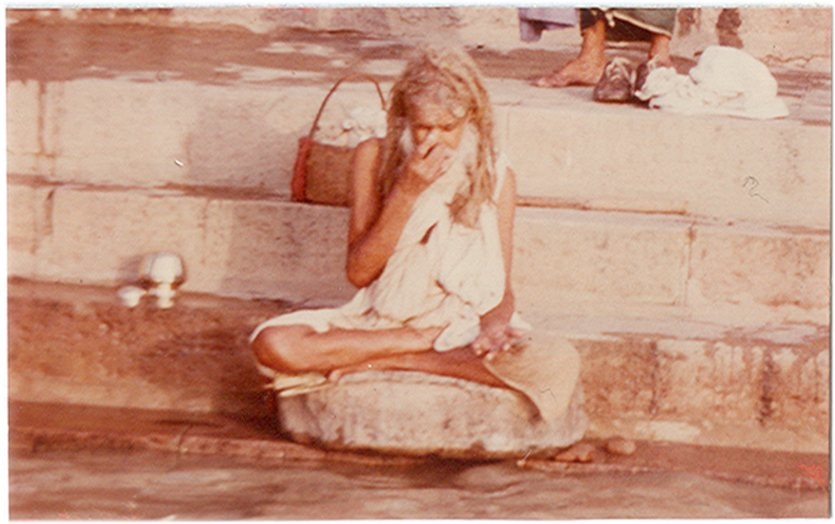
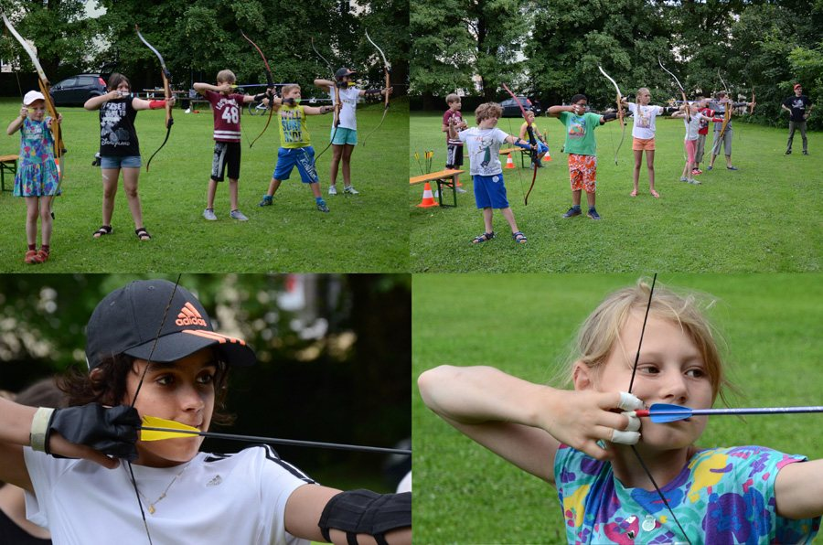

Qi Gong, Atem & Bogenschießen
Ergänzend zum Yoga: Übungen aus der chinesischen Tradition, Atemtraining und meditatives Bogenschießen.
Qi Gong
Der Kurs besteht – wie das bekannte Yin-Yang-Symbol – aus zwei sich ergänzenden Teilen: einerseits aus beruhigenden und entspannenden Übungen im Liegen bzw. Sitzen, andererseits aus energiebringenden Bewegungsteilen.
Besonders geübt werden die „Acht Schätze“. Sie bewirken ein „heilendes Feuer“ für Herz, Magen, Nieren und Milz; Schwierigkeiten, Sorgen und Betrübnisse werden gleichsam abgeschüttelt, „hundert Krankheiten“ schwinden und die Intensität der Lebenskraft (Qi) wird bei regelmäßiger Übung (Gong) erhöht – so heißt es in der jahrhundertealten chinesischen Überlieferung.
Bitte Trainingsanzug, Decke und rutschfeste Socken mitbringen.
Aktueller Kurs: Qi Gong & Yoga
Atme dich frei!

Der Atem ist die große Kraftquelle des Lebens.
Es ist möglich, wochenlang auf feste Nahrung und tagelang aufs Trinken zu verzichten – ohne Atem würden wir aber in wenigen Minuten sterben. Wer schlecht atmet, schlägt sich mit unzähligen, unnötigen Problemen herum, sei es mit der Gesundheit, dem Gefühlsleben oder im Beruf.
In diesem Kurs werden verschiedene Atmungen gelernt – vom Standpunkt moderner Physiologie ebenso wie altbewährte Atemübungen anderer Kulturen.
Regelmäßig Atemübungen auszuführen ist übrigens eine der besten Methoden, um sich das Rauchen abzugewöhnen.
Bitte Trainingsanzug und Decke mitbringen. 10er-Block € 135 · Einzelstunde € 15
Meditatives Bogenschießen
Körperkraft und Treffgenauigkeit im Sinne eines sportlichen Wettkampfs sind dabei weniger wichtig – es geht in erster Linie um die Harmonie von Bewegung, Atmung und Geist.
Meditatives Bogenschießen ist mit einfachster Ausrüstung für alle erlernbar: als Konzentrationsübung, als Ausgleichssport oder als „Weg“ im Geiste von Zen und Tao. Sie erlernen eine stabile Technik, den Bogen zu spannen, und trainieren dabei Geduld, Konzentration und Zielsicherheit.
Eine Synthese der Traditionen von Zen, Tao und Qi Gong – aus der Mongolei, Tibet und Bhutan.


Einführung nach Vereinbarung
Die Einführung ins meditative Bogenschießen erfolgt nach telefonischer Vereinbarung – die Ausrüstung wird zur Verfügung gestellt. Auch Kinder sind herzlich willkommen.
Sportfreunde für das Distanzschießen auf Standardbogen (ohne Visierhilfe) bis ca. 100 Meter sind ebenfalls willkommen.
- Leo Danter0732 / 79 25 60
- Mobil0677 990 25 400